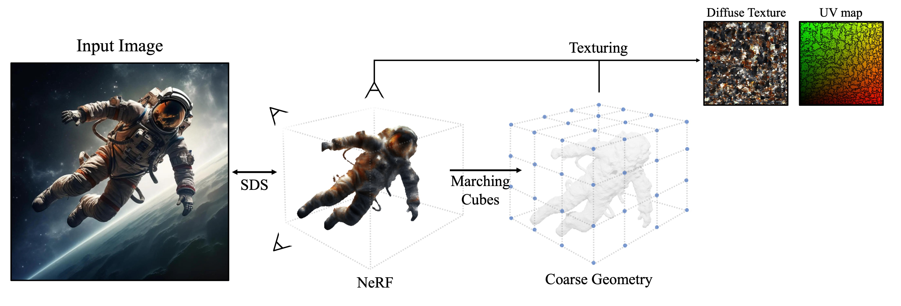
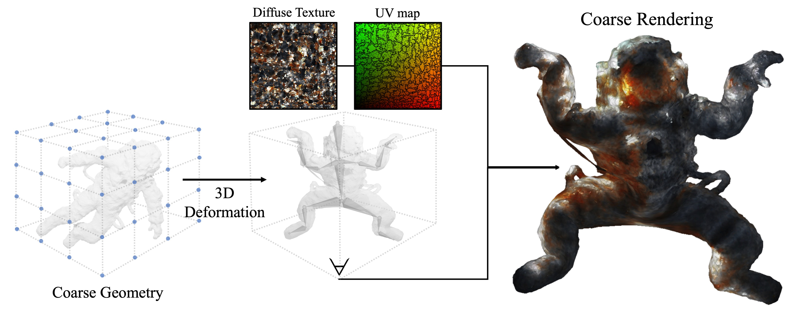
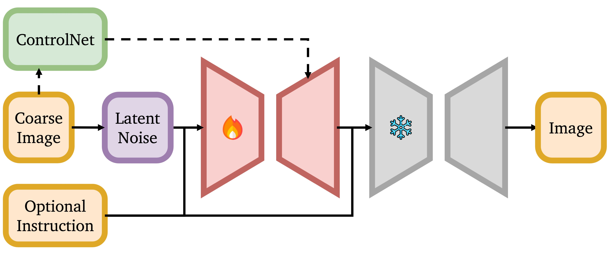
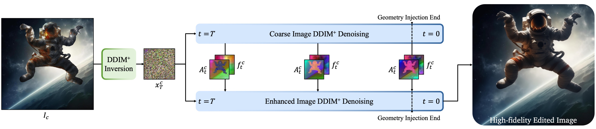
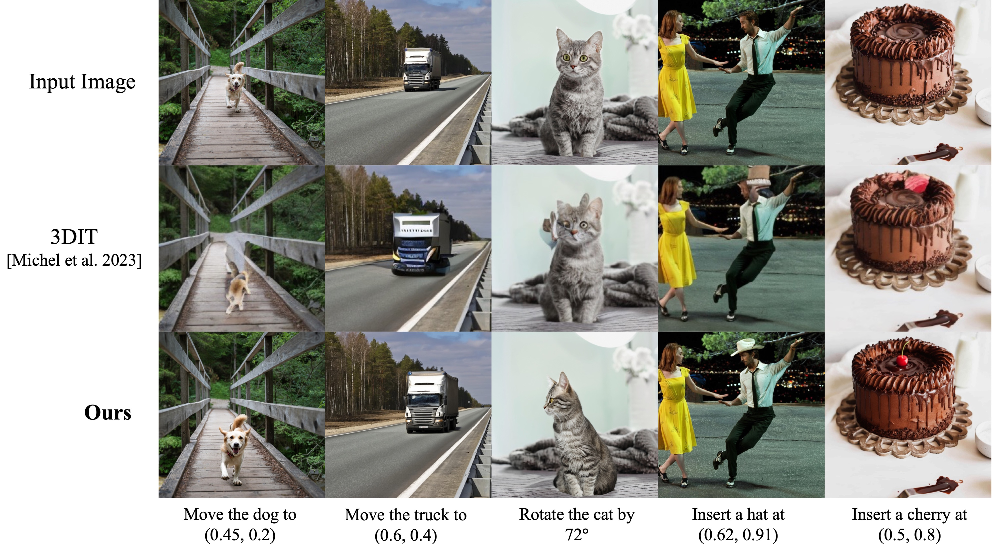
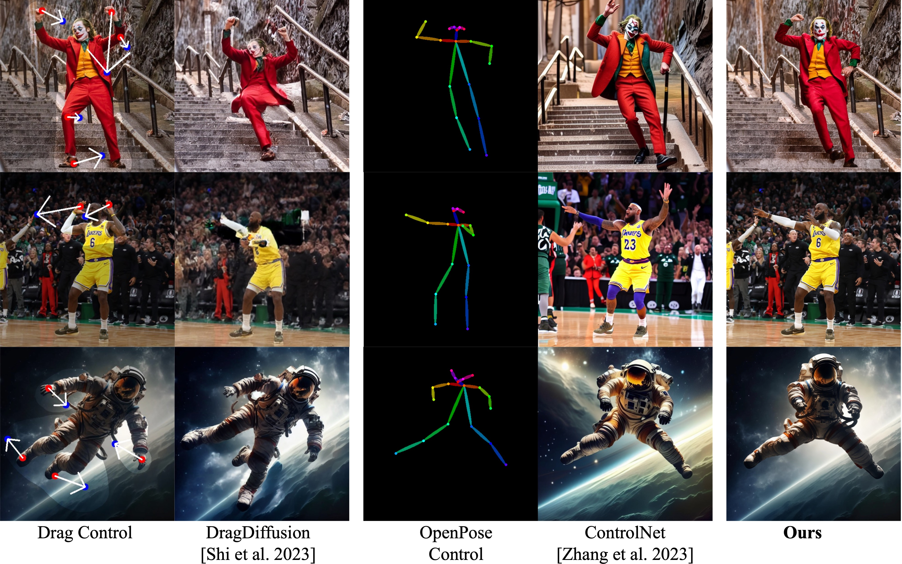
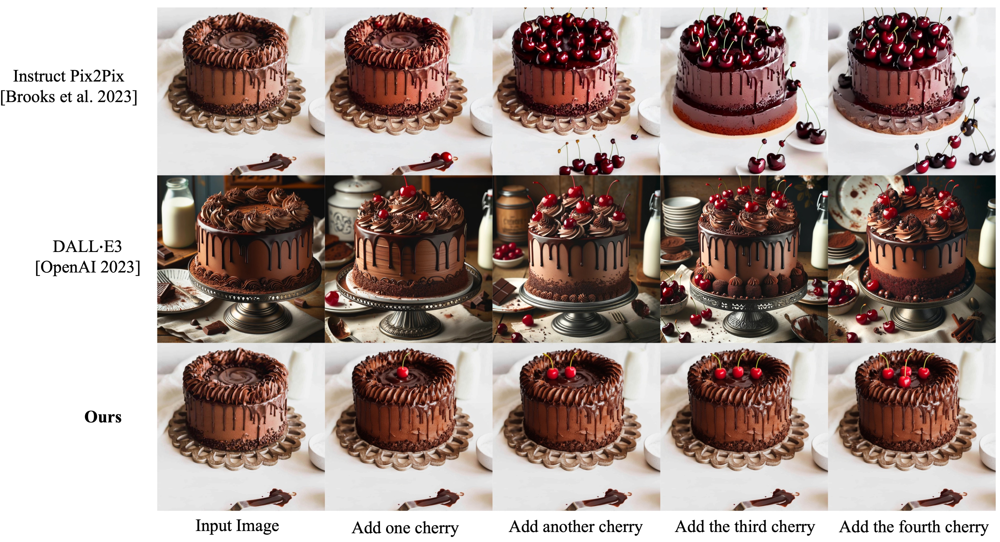

We present Image Sculpting, a new framework for editing 2D images by incorporating tools from 3D geometry and graphics. This approach differs markedly from existing methods, which are confined to 2D spaces and typically rely on textual instructions, leading to ambiguity and limited control. Image Sculpting converts 2D objects into 3D, enabling direct interaction with their 3D geometry. Post-editing, these objects are re-rendered into 2D, merging into the original image to produce high-fidelity results through a coarse-to-fine enhancement process. The framework supports precise, quantifiable, and physically-plausible editing options such as pose editing, rotation, translation, 3D composition, carving, and serial addition. It marks an initial step towards combining the creative freedom of generative models with the precision of graphics pipelines.
Framework
Our proposed Image Sculpting framework,
which metaphorically suggests the flexible and precise sculpting of a 2D image
in a 3D space, integrates three key components:
(1) single-view 3D reconstruction,
(2) manipulation of objects in 3D, and
(3) a coarse-to-fine generative enhancement process.
More specifically, 2D objects are converted into 3D models,
granting users the ability to interact with and manipulate the 3D geometry directly,
which allows for precision in editing.
The manipulated objects are then seamlessly reincorporated into their original
or novel 2D contexts, maintaining visual coherence and fidelity.
(1) Single-view 3D Reconstruction

The process begins by converting the input image into a textured 3D model through a de-rendering process.
Given an image of an object, our goal is to perform 3D reconstruction to obtain its 3D model.
Image to 3D model
Our initial step involves segmenting the selected object from the input image
using SAM . Building upon this, we then train a NeRF
model using Zero-1-to-3 and Score Distillation Sampling (SDS) .
We then convert a NeRF volume into a textured mesh using Marching cubes and texturing.
(2) 3D Deformation

This model is then prepared for interactive deformation by creating a skeleton
and calculating skinning weights. The user can modify the skeleton to deform the model,
resulting in an initial coarse image.
After obtaining the 3D model, a user can manually construct a skeleton and interactively
manipulate it by rotating the bones to achieve the target pose.
The mesh deformation affects the vertex positions of the object but not the UV
coordinates used for texture mapping; this procedure thus deforms the texture mapped
on the object following its deformation.
However, the resulting image quality depends on the 3D reconstruction's accuracy,
which, in our case, is coarse and insufficient for the intended visual outcome.
Therefore, we rely on an image enhancement pipeline to convert the coarse rendering into a high-quality output.
(3) Coarse-to-Fine Generative Enhancement
This section focuses on blending a coarsely rendered image back to its original background.
The aim is to restore textural details while keeping the edited geometry intact.
Image restoration and enhancement are commonly approached as image-to-image translation tasks,
leveraging the strong correlation between the source and target images.
Our challenge, however, presents a unique scenario:
despite overall similarities in appearance and texture between the input and desired output,
the input object's geometry changes, sometimes significantly, after user editing.

Overview of the coarse-to-fine generative enhancement model architecture.
The red module denotes the one-shot DreamBooth,
which requires tuning; the grey module is the SDXL Refiner ,
which is frozen in our experiments.
To address the balance between preserving texture and geometry,
our approach begins by "personalizing" a pre-trained text-to-image
diffusion model. To capture the object's key features,
we fine-tune the diffusion model with DreamBooth on one input
reference image. To maintain the geometry, we adapt a feature and attention injection
technique , originally designed for semantic layout control.
Furthermore, we incorporate depth data from the 3D model through
ControlNet. We find this integration crucial in
minimizing uncertainties during the enhancement process.
One-shot Dreambooth
DreamBooth fine-tunes
a pre-trained diffusion model with a few images for subject-driven generation.
The original DreamBooth paper has shown its ability to leverage the semantic
class priors to generate novel views of an object,
given only a few frontal images of the subject.
This aspect is particularly useful in our setting, since the coarse rendering
we work with lacks explicit viewpoint information. In our application,
we train DreamBooth using just a single example, which is the input image.
Notably, this one-shot approach with DreamBooth also effectively captures
the detailed texture, thereby filling in the textural gaps present in the
coarse rendering.
Depth Control
We use depth ControlNet to preserve
the geometric information of user editing. The depth map is
rendered directly from the deformed 3D model, bypassing
the need for any monocular depth estimation. For the background region,
we don't use the depth map. This depth map serves as a spatial control signal,
guiding the geometry generation in the final edited images. However,
relying solely on depth control is not sufficient – although it can
preserve the geometry to some extent, it still struggles in local,
more nuanced editing.

To refine this edited image, we invert the coarse rendering \(I_c\) into the noise \(x_T^c\). We then inject self-attention maps \(A_t^c\) and feature maps \(f_t^c\)
from the initial image's denoising process into the enhanced image denoising steps. This technique helps in preserving the geometry of the modified object while restoring the visual quality of the edited image.
DDIM+ represents DDIM with the DreamBooth fine-tuned and depth controlled model.
Feature Injection
To better preserve the geometry, we use feature injection.
This step begins with DDIM inversion
(with the DreamBooth finetuned, depth controlled diffusion model) of the
coarse rendering image to obtain the inverted latents.
At each denoising step, we denoise the inverted latent of the coarse rendering
along with the latent of the refined image, extracting their respective
feature maps (from the residual blocks) and self-attention maps
(from the transformer blocks).
It has been shown in PnP
that the feature maps carry semantic information,
while the self-attention maps contain the geometry and layout of the
generated images. By overriding the feature and self-attention maps
during the enhanced image denoising steps with those from the coarser version,
we ensure the geometry of the enhanced image can reflect those of the coarse
rendering.
Comparisons
Our approach introduces new editing features through precise 3D geometry control,
a capability not present in existing methods.
We compare our method with the state-of-the-art object editing techniques for a comprehensive analysis.

Comparisons with OBJect-3DIT on object translation, rotation, and composition tasks.
In this figure, we show that 3DIT , designed
for 3D-aware editing via language instructions, faces limitations when applied to real,
complex images, largely because its training is based on a synthetic dataset.

Comparisons with DragDiffusion and
ControlNet on pose editing.
These techniques face difficulties in handling complex pose modifications.
In this figure, we compare the pose editing ability with
DragDiffusion and
ControlNet .
This comparison reveals that these methods encounter difficulties
with complex pose manipulations because they are constrained to the 2D domain.

Comparisons with InstructPix2Pix
and DALL·E 3 on serial Addition.
These text-based editing methods fail to follow precise and quantifiable instructions.
Furthermore, we show how text-based editing methods like
InstructPix2Pix and DALL·E 3
struggle with precise and quantifiable instructions.
BibTeX
@article{Image Sculpting,
title={Image Sculpting: Precise Object Editing with 3D Geometry Control},
author={Jiraphon Yenphraphai, Xichen Pan, Sainan Liu, Daniele Panozzo and Saining Xie},
year={2024},
journal={arXiv preprint arXiv:2401.01702},
}